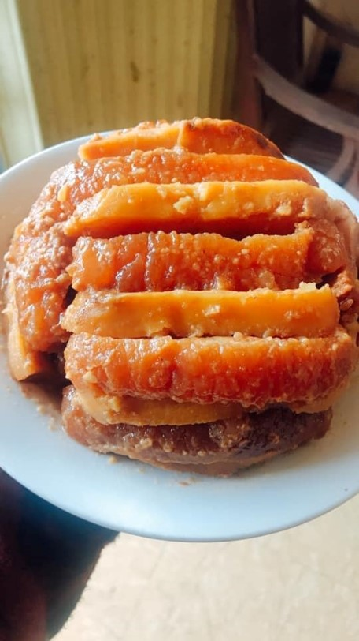
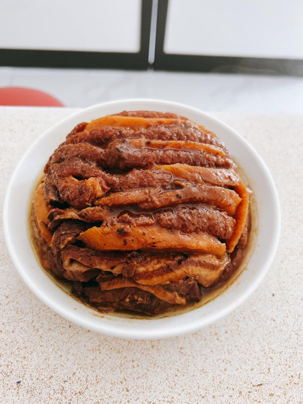

Nằm khau
Nằm khâu một món đặc sản Cao Bằng là món ăn trong cỗ cưới của người Tày ở Cao Bằng. Món được nấu từ thịt ba chỉ và khoai, đem lại hương vị khó quên. Nằm khâu là món ăn chủ yếu có trong các cỗ cưới, rất gần gũi với người dân các huyện của tỉnh Cao Bằng.
Món ăn phải luôn để nóng mới ngon. Không ít người lần đầu được thường thức, nhìn thấy miếng ăn to đã sợ ngấy, nhưng khi ăn rồi chỉ muốn được ăn thêm.